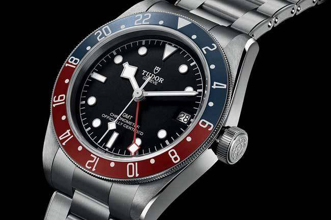

帝舵是勞力士旗下的一個手錶品牌，作為勞力士的普及版本。
早期的帝舵錶有勞力士的皇冠標誌，共用勞力士的零件，甚至使用的勞力士機芯。
但現在的帝舵錶已經沒有皇冠標誌，也改用瑞士斯沃琪旗下ETA生產的機芯，而該產品在1987至90年間推出電視廣告。
2015年起，品牌開始起用自家生產的帝舵機芯。

心得
謝謝老師這學習的教導
這學習我學到了如何製作自己的網站
雖然我到後面有些不懂
但在課堂請問老師 老師都有替我們解決與教導
連到首頁
連到第2頁
連到第3頁